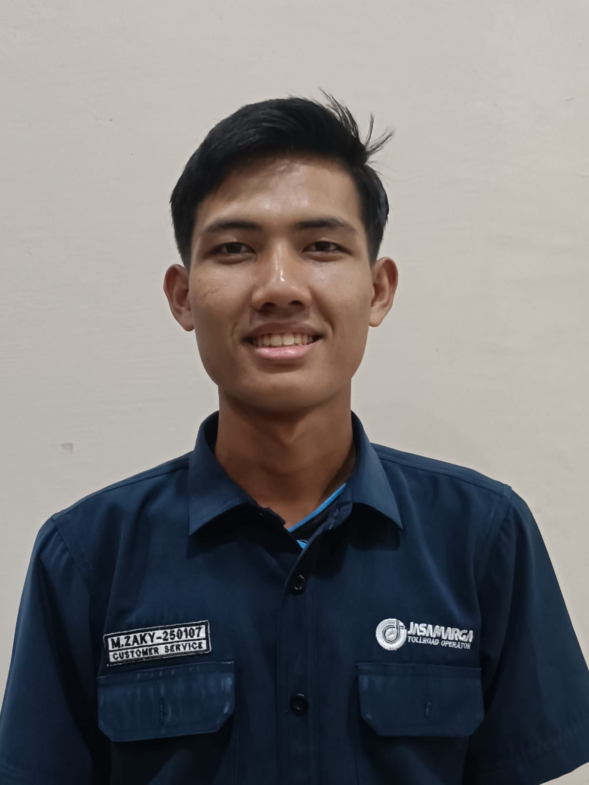

Foto Profil

📝 Tentang Saya
Perkenalkan, nama Muhammad Zaky Daffa Aqilah.
Saya adalah mahasiswa Sistem Informasi di Universitas Muhammadiyah Sumatera Utara yang memiliki minat besar dalam dunia teknologi.
Saya senang mempelajari hal-hal baru, mengembangkan keterampilan di bidang IT, serta berusaha menciptakan solusi digital yang bermanfaat.
📋 Data Pribadi
- Nama Lengkap: Muhammad Zaky Daffa Aqilah
- Tempat, Tanggal Lahir: Batu Bara, 06 Maret 2004
- Alamat: Jl. Platina 1 Gg.Anggrek
- Status: Belum Menikah
- Agama: Islam
- Kewarganegaraan: Indonesia
🎨 Hobi & Minat
- Futsal
- Mendaki gunung
- Berenang
🎓 Riwayat Pendidikan
-
SDN 0666661 MEDAN (2010 - 2016)
Lulus dengan nilai rata-rata 89
-
SMPN 33 MEDAN (2016 - 2019)
Lulus dengan nilai rata-rata 85.00
-
SMKS SINAR HUSNI II TR (2019 - 2022)
Jurusan Teknik Instalasi Listrik, lulus dengan nilai rata-rata 92.00
-
Universitas Muhammadiyah Sumatera Utara (2024 - Sekarang)
Jurusan Sistem Informasi, IPK 3.82/3.89
💻 Keterampilan
- Bahasa pemograman: Python, HTML5, CSS.
- Frameworks: React, Node.js, Express
- Database: MySQL
- Tools:Git, VS Code, Figma
- Keahlian: Memasang instalasi listrik, memperbaiki alat alat elektronik, membaca gambar listrik
💼 Pengalaman kerja
-
CV.LIGHTING VERTICAL (2022-2022)
- Memasang jalur instalasi listrik di rumah, apartemen, dll.
- Memperbaiki instalasi listrik yang korslet/putus.
- Pemeliharaan instalasi listrik di apartemen Grand Jati Junction.
-
PT.UNITED ROPE (2023-2024)
- Memperbaiki mesin jala yang rusak.
- Pemeliharaan mesin dan produksi jala.
- Mengatur absensi operator dan penempatan mesinnya.
PT.JASAMARGA TOLL OPERATOR (2025-Sekarang)
- Memastikan kendaraan masuk dan keluar tol sesuai golongan.
- Pelayanan terhadap pengguna jalan tol.
📅 Jadwal Harian
| Waktu |
Kegiatan |
| 07:00 - 07:30 |
Persiapan Kuliah |
| 07:30 - 12:30 |
Kuliah |
| 13:00 - 14:00 |
Istirahat & Makan Siang |
| 15:00 - 22:00 |
Kerja kalau shift siang |
| 23:00 - 05:00 |
Istirahat |
| 22:00 - 07:00 |
Kerja kalau shift malam |
📞 Kontak Saya